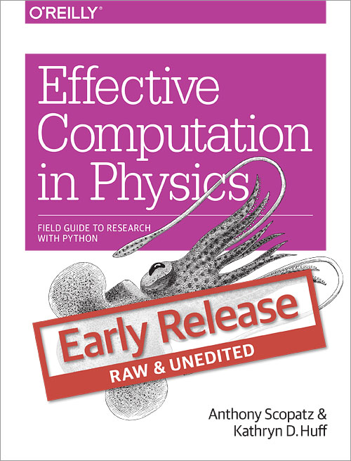

Finally! Effective Computation in Physics is a manual for
starting up or honing your programming and software skills even though
your background is in the physical sciences or engineering. This book
is your field guide to computing and research in the context
of the work that you are already doing. We cover all of the big
topics that you'll need, from how to program in
Python, how to use
important Python third party libraries such as
NumPy and
Pandas,
how to interact with the command line, how to write quality
publications using LaTeX,
and we even dive into the social aspects
of science and software development by teaching you
Git and
GitHub.
This book is aimed at people from all physics-based fields.
We take this to mean physics, astronomy, astrophysics, geology,
geophysics, climate science, applied math, biophysics, nuclear
engineering, mechanical engineering, material science, electrical
engineering, and more!
All too often in the physical sciences, people are asked and
expected to "just pick up" the computational aspects of their work
as they go. This may have been a reasonable expectation in decades
past. But now there is so much going on in computer science
and software development that it is impossible to keep up, let alone
get ahead. As both authors have run this gauntlet and survived,
we understand the perspective and challenges of physical scientists
and engineers who are starting out in computing - no matter what point
they are at in their career. Effective Computation in Physics
will give you the computational foundation that you need to
succeed in your work.
Table of Contents
- Forward by Greg Wilson of
Software Carpentry
- Chapter 1 - Introduction to the Command Line
- Chapter 2 - Programming Blast Off with Python
- Chapter 3 - Essential Containers
- Chapter 4 - Flow Control & Logic
- Chapter 5 - Operating with Functions
- Chapter 6 - Classes and Objects
- Chapter 7 - Regular Expressions
- Chapter 8 - NumPy: Thinking in Arrays
- Chapter 9 - Storing Data: Files & HDF5
- Chapter 10 - Important Data Structures in Physics
- Chapter 11 - Analysis and Visualization
- Chapter 12 - Performing in Parallel
- Chapter 13 - Deploying Software
- Chapter 14 - Building Software Pipelines
- Chapter 15 - Local Version Control
- Chapter 16 - Remote Version Control
- Chapter 17 - Debugging
- Chapter 18 - Testing
- Chapter 19 - Documentation
- Chapter 20 - Publication
- Chapter 21 - Collaboration
- Chapter 22 - Licenses, Ownership, and Copyright
- Chapter 23 - Further Musings on Computational Physics
To follow along with the code examples and work on the exercies
in Effective Computation in Physics, you'll first need to
install some software. Everything that you need is
free and open source.
We will be using the conda
package manager for all of our installation needs.
Step 1: Download & Install Miniconda
If you have not done so already, please download and install
miniconda. Miniconda is Python distribution that comes with conda,
which we will then use to install everything else we need.
To download miniconda, please visit
http://conda.pydata.org/miniconda.html
and find the version that is right for your system. Linux, Mac OSX,
and Windows builds are available for 32- and 64-bit architectures.
You do not need administrator privileges on your computer to
install miniconda. We recommend that you install the Python 3
version of miniconda. All of the examples in this book should
work with Python 2 as well.
If you are on Windows, you can install miniconda simply by
double clicking on the executable and following the
instructions on the installation wizard.
Special Windows Instructions - msysGit and Git Bash:
If you are on Windows, please download and install msysGit,
which you can find at
http://msysgit.github.io/.
This will provide you with both the version control system called
git as well as the bash shell. Both of these we will discuss at
length and are not automatically available on Windows or through
miniconda. The default install settings should be good enough for
purposes here.
If you are on Linux or Mac OSX, first open your +Terminal+
application. If you do not know where your terminal lives, uses
your operating system's search functionality to find it. Once you
have an open terminal, type in the following after the dollar sign
($). Note that you may have to change the version number in the
filename (the Miniconda-3.7.0-Linux-x86_64.sh part) to match the file
that you downloaded.
In the above we have downloaded miniconda into our default download
directory, ~/Downloads. The name of the file that we
downloaded also depends on the version of miniconda that we grabbed
as well as whether it was 32- or 64-bit. You may have to adjust the
file name accordingly.
On all Linux, Mac OSX, and Windows, when the installer asks you
if you would like to automatically change or update the
bashrc file or the system PATH, say yes.
That will make it so that miniconda is automatically in your
environment and will ease further installation. Otherwise, all of
the other default installation options should be good enough.
Step 2: Install the Packages
Now that you have conda installed, we can install the packages
that we need for this book. On Windows open up the command prompt,
cmd.exe. On Linux and Mac OSX, open up a terminal.
You may need to open up a new terminal window for the installation of
minconda to take effect. Now, no matter what your operating system is,
type the following command:
This may take a few minutes to download. After this, you are
ready to go!